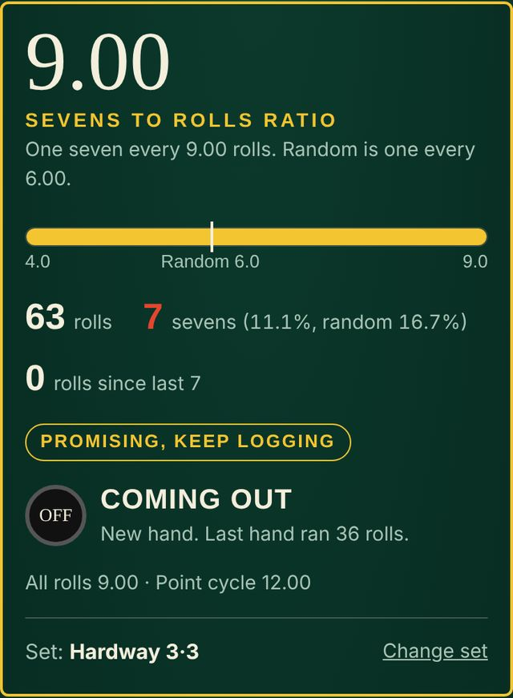
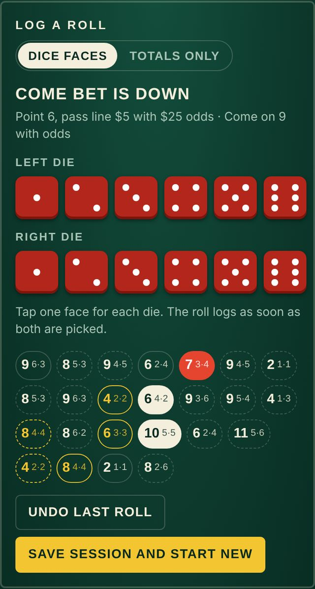
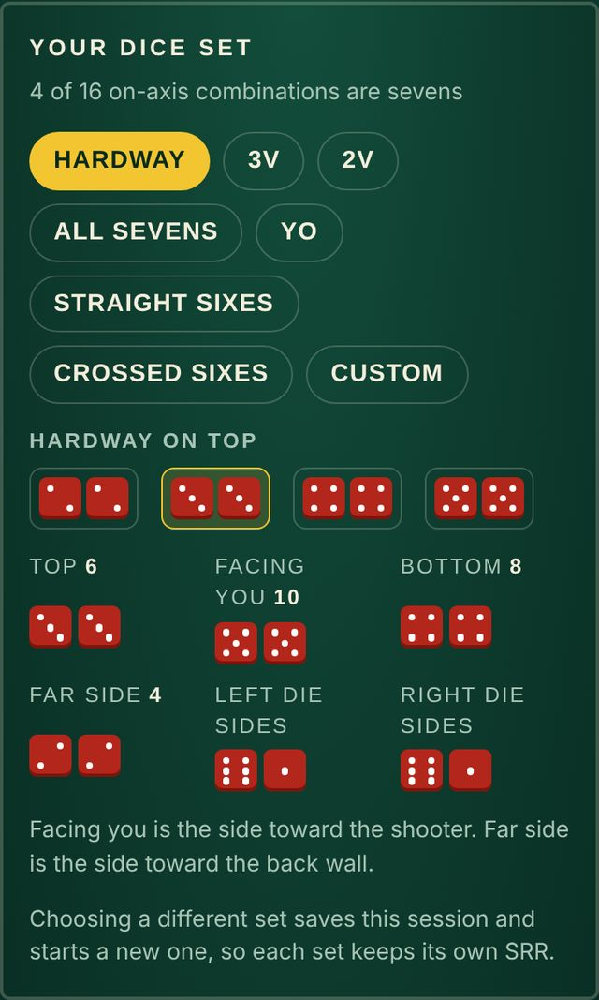
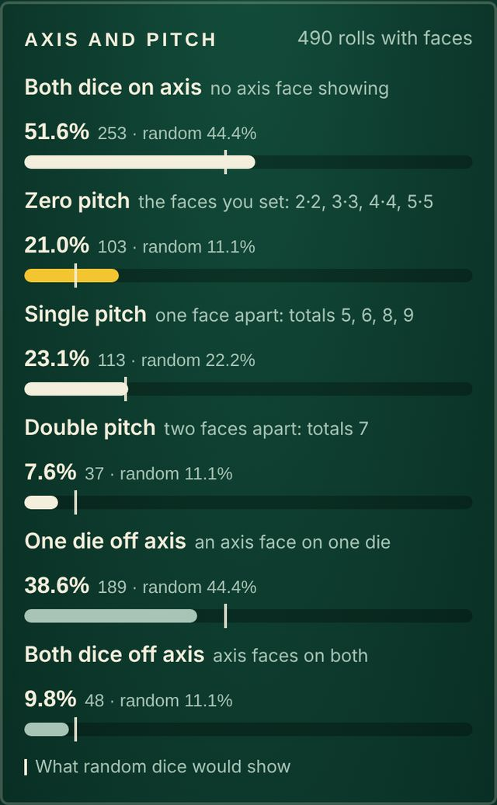
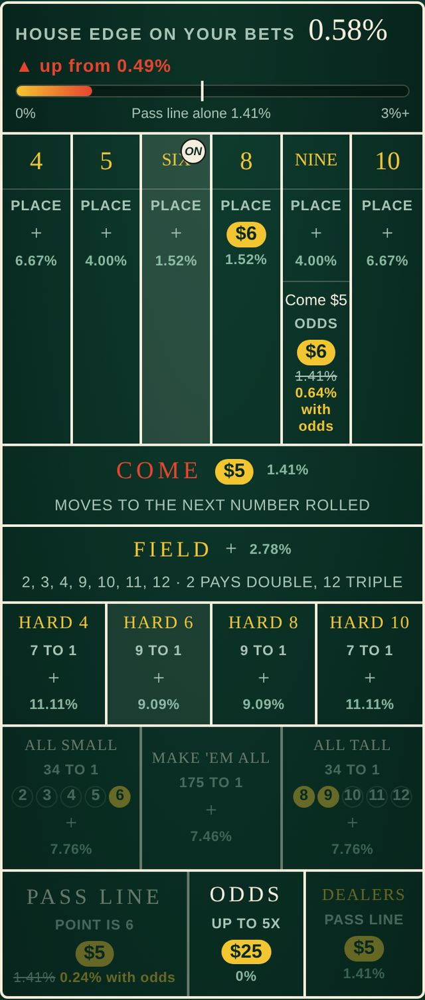
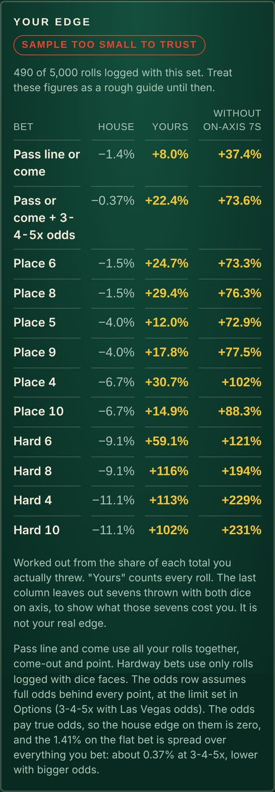
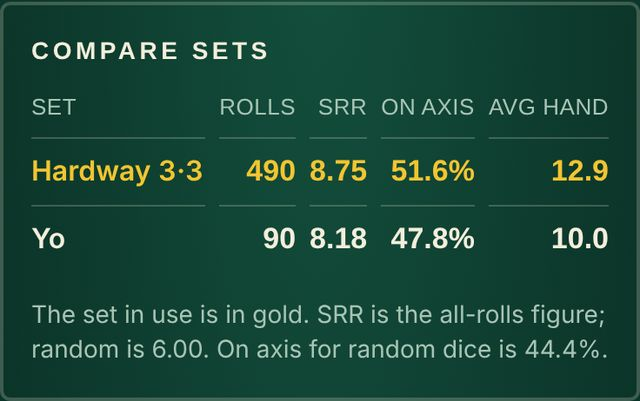

Dice Control Pro
Dice Control ProEverything a dice setter tracks.
From your first practice throw to a full session at the table, Dice Control Pro counts it, checks it against random dice, and tells you what it means for your bets.
Your SRR, roll by roll
The big number is your sevens-to-rolls ratio. Random dice sit at 6.0; the higher you climb above it, the better your throw is working.
- Rolls, sevens and rolls since the last seven
- A luck check: how often random dice would match your SRR
- Come-out and point tracking with a point-cycle SRR

Log faces or totals
Tap the face on each die so the app can see how the dice landed, or tap the total when you need speed. Undo fixes a wrong tap.
- A roll tape of your last 24 rolls, with zero-pitch hits in gold
- Session notes for the table, grip or anything else
- Large buttons option for use at a practice rig

Any dice set
Choose Hardway (with 3, 2, 4 or 5 on top), 3V, 2V, All Sevens, Yo, Straight Sixes or Crossed Sixes — or build your own face by face. Every set keeps its own SRR, so you can compare them fairly.

See how the dice landed
From rolls logged with faces, see how often your dice came up zero pitch, single pitch or double pitch, and how often one or both dice went off axis — each next to what random dice would show.
- Where your sevens came from
- Number targets, such as 6 and 8, against random
- Totals chart from 2 to 12

A Las Vegas betting table
Set a bankroll and bet $1, $5, $25 and $100 chips as you log your rolls. Every bet is paid or taken on each roll, with the math shown for every win.
- Pass line and come with odds, place bets, hardways, field
- All Tall All Small and a pass line bet for the dealers
- Off and on, calling bets off, and come-bet reminders
- 3-4-5x odds, or set your own limit

Your edge on every bet
Every craps bet priced two ways: against a random shooter, and from your own rolls. Add odds on the table and watch the live meter show the house edge drop — from 1.41% on the pass line alone to 0.37% with full 3-4-5x odds.

Sessions, history and backups
Save sessions with notes, compare every set you've thrown side by side, export every roll to a spreadsheet, and back up all your data to move it to a new phone.

Want the details?
The searchable user manual walks through every screen, bet and setting.
Open the user manual →